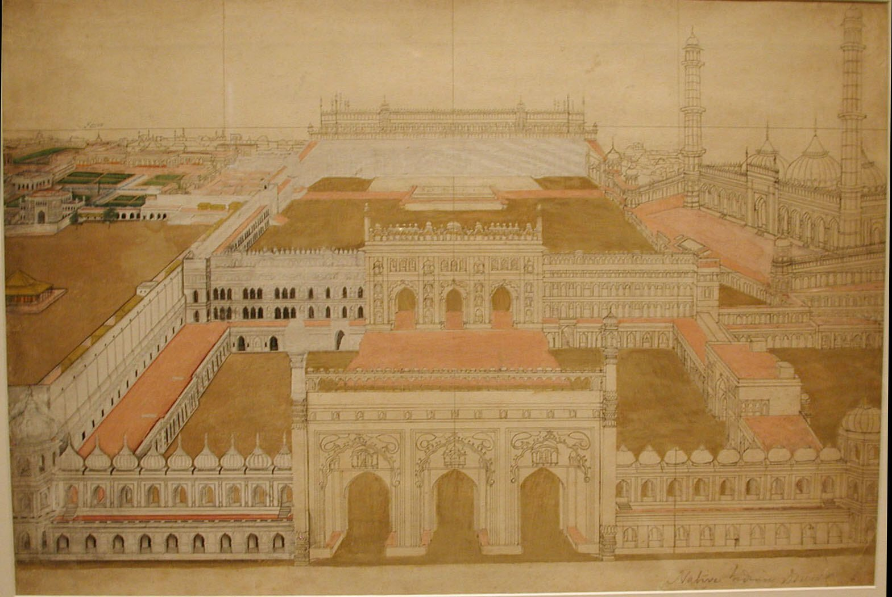

今日一句话总览
过去 24 小时的主线不是某一种风格突然走红，而是艺术机构的“制度外壳”被同时检验：财政、劳动、场馆气候适应与画廊网点都在收缩或重组；与此同时，济州、香港、波哥大、威尼斯与纽约的新项目正把地方经验、参与式方法和跨学科教学推向国际平台。
信息来源与检索范围
- 检索时间：2026-08-04 09:01–09:32（中国标准时间 CST，UTC+8）。
- 覆盖地区：东亚、东南亚、西亚、欧洲、北美、拉丁美洲，并通过参展名单覆盖非洲及加勒比地区；重点核验韩国济州、中国香港、卡塔尔/意大利、法国、英国、美国、哥伦比亚等地。
- 主要来源：ARTnews、Artforum、Hyperallergic、e-flux；Guggenheim、Whitney Museum、香港故宫文化博物馆、American Alliance of Museums 等机构官网；Google News RSS 用于发现线索，正文尽量回到原始来源核验。
- 时间范围：新闻优先采用过去 24 小时（8 月 3 日 01:00 UTC 至 8 月 4 日 01:00 UTC）；展览公告与仍具时效性的机构材料扩展至过去 7 天（7 月 28 日起），均在条目内注明。
- 访问失败 / 不确定项：MoMA 页面触发 Cloudflare（HTTP 403），因此未采用仅能看到标题而无法核验细节的最新电影与设计展讯；The Met 新闻稿触发 Vercel 安全检查（HTTP 429），Si Lewen 展览未写入未经核验的展期；Marquette Today 被 Cloudflare 拦截，未采用其秋季展览细节。Google 普通搜索多次 429/超时，改用 News RSS 定位，再通过机构页面、WordPress API 或原文网页核验。Hyperallergic 的匹克球公共艺术报道正文对未登录读者仅部分开放，本文只使用其公开可见信息。
开放图像说明
- 配图：《勒克瑙Bara Imambara建筑群，约1800年》；The Metropolitan Museum of Art Open Access，Public Domain。
- 配图用于补充视觉艺术史与博物馆公共叙事，不是新闻事件现场照片。
一、必看头条（5 条）
1. 白宫提议把 Smithsonian 联邦拨款降至 2020 年以来最低，并削减约 6% 全职岗位
- 地区 / 机构：美国华盛顿特区 / Smithsonian Institution
- 来源：ARTnews
- 时间：2026-08-03 15:05 UTC（过去 24 小时）
- 事件摘要：美国政府提出 Smithsonian 2027 财年联邦拨款 9.613 亿美元，较国会为 2026 财年提供的 10.8 亿美元低约 11%；设施支出拟由 1.52 亿降至 1.20 亿美元，联邦资助的全职当量岗位由 4,047 减至 3,804。该方案仍是预算提案，并非已经生效的最终拨款。
- 为什么重要：展览最容易获得捐赠者关注，保安、维护、库房、研究和日常运营却高度依赖稳定公共资金。削减同时落在人员与设施上，会直接影响开放时间、藏品照护及新馆项目，而非只影响“行政成本”。
- 可延伸观察：国会最终拨款；Smithsonian 是否以冻结招聘、缩短开放或延后维护来应对；财政压力是否与政府对其叙事方向的政治施压合流。
2. Taryn Simon 将以全新 42 章项目占据 Guggenheim 整座旋转厅
- 地区 / 机构：美国纽约 / Solomon R. Guggenheim Museum
- 来源：Guggenheim 馆方新闻稿；ARTnews 细节报道
- 时间：2026-08-03（过去 24 小时）；展览 2026-09-18 开幕
- 事件摘要：`Father Country I Do Love You` 是 Simon 历时近十年的新作，由 42 章摄影、文本、影像和雕塑构成，围绕一名未具名联邦探员及其行动的全球回响展开，并映射艺术家父亲的经历、失语与阿尔茨海默病。这是 Guggenheim 首次把整座旋转厅交给一位以摄影和影像工作的艺术家，完整呈现一套从未展出的新作。
- 为什么重要：摄影展不再被理解为一排平面图像，而被组织成可步行、可阅读、时间化的叙事建筑；私人记忆、国家机器与证据系统将在同一空间中相互碰撞。
- 可延伸观察：42 章如何适应螺旋动线；作品对匿名当事人、家庭记忆及国家档案的伦理处理；观众是否能区分文献证据、艺术重构与隐喻。
3. 2026 济州双年展公布 69 位艺术家与团体，以“人—神祇—石头”连接岛屿经验和全球议题
- 地区 / 机构：韩国济州 / Jeju Museum of Art、2026 Jeju Biennale
- 来源：Artforum
- 时间：2026-08-03 19:49 UTC；展期 2026-08-25—11-15
- 事件摘要：第五届济州双年展题为 `Iyahong: The Art of Metamorphosis`，参展者来自 21 个国家，约 30% 来自济州。李禹焕、尹亨根、白南准、车学庆与 Wael Shawky、Gala Porras-Kim、Alaa Edris、Saodat Ismailova 等同场；济州美术馆、老城空间、济州石文化公园分别以“人”“神祇”“石头”为线索，另设 Patricio Guzmán、Ben Rivers 等人的影像单元。
- 为什么重要：地方型双年展不必靠淡化地方性来获得国际性。济州以本地艺术家比例、石文化和老城场域构建骨架，再把跨代韩国艺术史与全球影像实践嵌入其中。
- 可延伸观察：30% 本地比例是否落实为策展叙事权与制作资源，而非名单指标；三类场地之间的交通、可达性和生态负荷。
4. Palais de Tokyo 因极端高温将闭馆改造，但临时办公选址挤压艺术家自营空间
- 地区 / 机构：法国巴黎 / Palais de Tokyo、La Générale
- 来源：Artforum
- 时间：2026-08-03 18:32 UTC
- 事件摘要：Palais de Tokyo 计划自 2027 年 7 月闭馆至少 18 个月。其 1937 年建筑近年在气温超过 35°C 时多次关闭，改造具有明确的气候适应背景；争议在于临时行政空间拟使用巴黎十四区一座旧音乐学院，而该楼自 2019 年起是艺术家自营空间 La Générale 的所在地，后者的临时占用协议被告知不再续签。
- 为什么重要：大机构的“韧性升级”可能把成本转嫁给资源更少的基层文化组织。建筑可持续性不能只计算能耗，还应计算城市文化生态中的空间替代与权力差异。
- 可延伸观察：La Générale 能否获得替代场地；Palais 是否公开临时迁移的决策过程；闭馆期间艺术家、自由职业者与观众项目如何延续。
5. Gagosian 关闭伦敦小型空间并拟退出巴塞尔现址，超级画廊开始重算固定网点
- 地区 / 机构：英国伦敦、瑞士巴塞尔 / Gagosian
- 来源：ARTnews
- 时间：2026-08-03 21:34 UTC
- 事件摘要：Gagosian 已关闭 2023 年启用的伦敦 Burlington Arcade 小型展销空间，并将结束 2019 年以快闪形式起步、延续七年的巴塞尔 Rheinsprung 1 空间。画廊仍保留伦敦两处 Mayfair 空间，并表示继续考察巴塞尔其他可能；同时纽约新开了约 12,000 平方英尺旗舰店，因此这不是简单的全面收缩。
- 为什么重要：超级画廊正在从“城市越多越好”转向按租金、客户触达、艺博会周期与旗舰效率动态配置网点。快闪空间延长为常设、再退出的路径，可能成为市场波动期的标准模型。
- 可延伸观察：其他巨型画廊是否跟进减少小型据点；巴塞尔艺博会周的临时展示能否替代全年空间；出版、edition 与零售功能是否更多转向线上或旗舰店。
二、最新展览与展讯（9 条）
1. Taryn Simon：`Father Country I Do Love You`
- 地点 / 时间：纽约 Guggenheim；2026-09-18 开幕。
- 来源：Guggenheim；公告更新于 2026-08-03。
- 主题与亮点：42 章跨摄影、文字、影像与雕塑的新作，把一个人的职业轨迹、艺术家的父女记忆、民主制度和“看不见的手”编成螺旋式叙事。配套艺术家书由 Guggenheim 与 Hatje Cantz 出版。
- 适合关注：摄影/影像创作者、档案艺术研究者、叙事空间设计者，以及讨论记忆与证据伦理的教育者。
2. 2026 济州双年展：`Iyahong: The Art of Metamorphosis`
- 地点 / 时间：韩国济州美术馆、济州老城、济州石文化公园等；2026-08-25—11-15。
- 来源：Artforum；名单公布于 2026-08-03。
- 主题与亮点：69 位艺术家与团体、21 个国家、约三成本地参展者；以“人、神祇、石头”分别回应身体、信仰与岛屿地质，并以独立影像项目补充移动影像史。
- 适合关注：双年展研究者、岛屿与生态策展人、韩国艺术史和实验电影观众。
3. 盐田千春：`The Moment the Snow Melts`
- 地点 / 时间：意大利米兰 MUDEC—Museo delle Culture；2025-11-19—2026-09-20。
- 来源：e-flux / MUDEC；页面发布于 2026-08-03。
- 主题与亮点：白色线网自 MUDEC 的 Agora 顶部垂落，夹带写有“曾与自己相遇、后来断开联系之人”姓名的纸条。观众可在馆内或数字渠道提交文字与图画，使私人记忆进入公共装置；融雪被用作关系终结、缺席与周期更新的隐喻。
- 适合关注：装置、纤维艺术、参与式项目、哀伤与记忆主题教育活动设计者。
4. Ellen Pau（鲍蔼伦）：`She Moves`
- 地点 / 时间：纽约 SculptureCenter；展至 2026-08-16。
- 来源：Hyperallergic 展评；2026-08-03。
- 主题与亮点：这场香港录像艺术先驱的首个美国调查展汇集 15 件自 1980 年代末至今的影像与装置，以水的滴落、融化、蒸发和维港游泳者映射香港的持续转型；新作还通过蜡、胶片、生成声音、气味和感应装置讨论记忆保存、抗争经验与历史抹除。早期录像在媒介迁移中经历 NTSC、PAL、VHS、DVD，并在最近以 AI 修复。
- 适合关注：录像艺术保存、香港视觉文化、多感官策展、档案政治与媒介考古研究者。
5. 香港故宫：`城中一日──跨越时空的格物实验`
- 地点 / 时间：中国香港 / 香港故宫文化博物馆展厅 7；2026-07-31 起（过去 7 天扩展项，馆方未在本轮新闻稿中标明闭展日）。
- 来源：香港故宫馆方新闻稿；2026-07-30。
- 主题与亮点：龙家昇、韩家俊、雷焯诺、曾庆灵、章柱基、利志达、丘国强、陶启安、林丰九位香港艺术家，以绘画、雕塑和多媒体把紫禁城日常与香港都市经验对接。展厅另设工作坊平台，由听障、自闭症谱系、以足作画及其他本地艺术家带领跨代共创。
- 适合关注：传统文化当代转译、博物馆无障碍、公教项目及香港本地创意生态从业者。
6. Sonya Kelliher-Combs：`TITIQ/MARK`
- 地点 / 时间：纽约 Whitney Museum；2027-02-06 开幕。
- 来源：Whitney Museum；页面于 2026-08-02 进入最新检索。
- 主题与亮点：这位 Iñupiaq 与 Koyukon 艺术家近二十年实践的纽约首个美术馆个展，也是 Whitney 首次为原住民艺术家举办职业中期调查展。海洋哺乳动物肠衣、驯鹿毛、豪猪刺、兽皮、线与艺术家自研丙烯聚合物，把代际知识、殖民留下的可见/不可见痕迹、自决和土地使用连在一起。
- 适合关注：原住民艺术、材料伦理、传统工艺延续、收藏与跨机构合作人员。
7. Na Kim：`Portraits`
- 地点 / 时间：美国罗得岛 Newport / Old Stone Mill 与 Redwood Library & Athenaeum；展至 2026-08-10。
- 来源：ARTnews 访谈；2026-08-03。
- 主题与亮点：艺术家兼书籍设计师把小幅云朵绘画置于无屋顶石塔的防风雨框架中，观众可同时看见画中云与真实天空；另一件横幅绘画跨街设置。项目用最少的建筑介入，让“肖像”从面孔转向不断变化的气象。
- 适合关注：绘画、书籍设计、古建介入、轻量级场域特定项目与户外展陈者。
8. Sharmistha Ray：`Geometry of Play`
- 地点 / 时间：美国匹兹堡市中心 Arts Landing；2026 年 8 月报道时已开放。
- 来源：Hyperallergic；2026-08-03（公开正文只显示部分细节）。
- 主题与亮点：三块可正常使用的匹克球场被转化为色彩强烈的地面壁画；作品由 Pittsburgh Cultural Trust 推动，报道将其称为首批艺术家委托的匹克球场。它不是让运动为艺术让路，而是让规则线、身体移动与公共图形共用同一表面。
- 适合关注：公共艺术、城市更新、运动空间设计、需要扩大非传统观众触达的机构。
9. NADA Miami 第 24 届
- 地点 / 时间：美国迈阿密 Ice Palace Studios；2026-12-01—12-05。
- 来源：ARTnews；参展名单发布于 2026-08-03。
- 主题与亮点：135 家参展机构来自 27 个国家、63 座城市，其中 45 家首次参加；名单含 Lagos 的 Affinity Gallery、Caracas 的 ABRA、St. Croix 的 Forgotten Lands、东京 AKIINOUE 等。25 家进入 NADA Projects；部分票款继续支持 Pérez Art Museum Miami 的 NADA Acquisition Gift 购藏计划。
- 适合关注：新兴画廊、非主流市场网络、小型机构国际化与“艺博会现场购藏”机制研究者。
三、艺术事件 / 机构动态 / 市场与政策（8 条）
1. Royal Museums Greenwich 员工确定 8 月 11—12 日罢工
- 来源：Artforum，2026-08-03。
- 动态：逾 90% Prospect 工会成员参加投票，约 77% 支持罢工。诉求包括伦敦生活工资认证、圣诞闭馆、保安带薪休息、固定期合同政策与培训晋升；National Maritime Museum、Queen’s House、Royal Observatory、Cutty Sark 均受影响。Royal Observatory 的 8 月 12 日行动恰逢英国近三十年来最显著的日食。
- 意义：继 V&A 投票支持行动后，英国遗产部门的劳动争议正在形成跨机构信号；热门天象或明星项目不能遮蔽前线劳动的基本条件。
2. 香港故宫创馆馆长吴志华将于 2027 年 1 月离任
- 来源：Artforum，2026-08-03。
- 动态：吴志华完成七年合约后退休；他自 2019 年起监督建馆与开馆，任内机构举办约 40 个专题及特别展，接待逾 460 万人次，并建立包括梦蝶轩捐赠在内的 900 余件中国、中亚及西藏瓷器与玻璃器馆藏。
- 意义：创馆阶段转向常态运营后，继任者需处理的不只是展览品牌，还包括馆藏研究、本地公众关系、北京故宫合作及西九文化区整体治理。
3. Bogotá Biennial 公布 2027 年第二届策展团队
- 来源：Artforum，2026-08-03。
- 动态：Juan Ricardo Rincón Gaviria 任总监，Magalí Arriola 与 José Esparza Chong Cuy 任首席策展人，María Paula Bastidas、Juliana Steiner、Elkin Rubiano 分别参与策展与公共项目。该项目由波哥大市政府主导，首届 2025 年展出 12 国逾 200 位艺术家。
- 意义：团队同时具备墨西哥美术馆、纽约建筑空间、哥伦比亚地方知识、独立空间和大学人文背景，预示城市双年展会把公共项目与都市议题置于核心，而非仅复制国际明星名单。
4. Gagosian 调整伦敦、巴塞尔网点
- 来源：ARTnews，2026-08-03。
- 动态：关闭 Burlington Arcade，拟结束 Rheinsprung 1，但保留两处伦敦主空间并强化纽约旗舰。
- 意义：应把它读作房地产和客户服务模型的再平衡，而非直接等同于市场崩塌；后续需要销售、参展和新空间数据支持判断。
5. 2021 年“世界最大画布”慈善拍卖的 6,200 万美元至今未到位
- 来源：ARTnews，2026-08-03。
- 动态：Sacha Jafri 的 `The Journey of Humanity` 2021 年在迪拜拍出当时约 6,200 万美元，原拟由 Dubai Cares 分配给 UNICEF、UNESCO 与 Global Gift Foundation；五年后相关慈善机构仍未收到款项。Dubai Cares 已对买家 André Abdoune 提起持续中的法律程序；针对艺术家的部分指控已被法官驳回，Jafri 否认参与竞买人审核和资金处理。
- 意义：必须区分“落槌价”“已支付款”“可分配净款”和“受益机构到账”。艺术慈善项目若无托管、付款节点与违约披露，巨额数字可能只是一场传播事件。
6. The Met 为 2027 John Galliano 大展事先与犹太社群领袖沟通
- 来源：ARTnews，2026-08-03。
- 动态：在宣布 2027 Costume Institute 展览 `John Galliano: Horizons` 前，Anna Wintour、策展人 Andrew Bolton 与 Galliano 同反诽谤联盟负责人及多位纽约拉比会面。背景是 Galliano 2011 年的反犹言论及其后持续的声誉修复。
- 意义：争议人物回顾展的风险管理正在前置；但“咨询”并不自动等于获得认可，机构仍需公开策展框架、受影响社群的不同意见，以及如何避免把悔过叙事变成品牌洗白。
7. The Met 低调展出 Ken Griffin 借出的 Leonardo 作品
- 来源：ARTnews，2026-08-03。
- 动态：`Madonna of the Yarnwinder`（约 1501/1505，又称 Lansdowne Madonna）自春季起在 609 展厅展出，标签归为“Leonardo 与工作室”，来自收藏家 Kenneth C. Griffin；这是馆内目前唯一在展的 Leonardo 作品，但机构未发新闻稿。Leonardo 专家 Martin Kemp 支持该归属。
- 意义：私人借展可以迅速提升常设展吸引力，也提出透明度问题：借期、保险、归属意见与所有权背景应如何向公众充分说明。
8. Smithsonian 预算与博物馆反审查工具在同一天进入公共讨论
- 来源：ARTnews 预算报道；American Alliance of Museums 指南；均为 2026-08-03。
- 动态：财政削减提案与 AAM/NCAC 面向机构的反审查操作指南同步出现。
- 意义：内容自主不只是价值宣言，也依赖预算、法律支持、决策权限和争议预案；资金脆弱会放大外部干预的效果。
四、技术、知识与新观念（6 条）
1. VCUarts Qatar 用“创意研究实验室”替代封闭院系式艺术科技教学
- 来源：ARTnews，2026-08-03。
- 内容：威尼斯双年展平行展 `Aghrab Idrāk: Thresholds of Perception` 被作为教学“概念验证”：约 350 名学生通过 Sonic Jeel、Anthro-tech Atelier、xLab 等实验室，让平面、纺织、视听工程、字体、插画与人类学、计算机科学、工程交叉；xLab 还研发适用于阿拉伯文字的字体与电子显示。
- 启发：跨学科不是给课程表增加一门“AI 选修”，而是围绕真实研究问题组建可持续实验室，让教师研究、学生制作、展览发布形成闭环。也应继续追问多哈资源优势能否转化为可复制的低成本版本。
2. AAM/NCAC：抵抗审查要靠预案、权限和书面政策，而不只靠临场表态
- 来源：American Alliance of Museums，2026-08-03。
- 内容：指南指出，审查压力常被包装成安全、暖通、非营利法规或“艺术家会政治化活动”等技术理由。建议机构预先建立艺术/文化自由声明、与使命相连的展览遴选标准、明确谁有决策权及谁无权干预，并熟悉争议管理最佳实践。其“Collective Courage”声明已有 283 家机构和 909 名文化工作者背书。
- 启发：策展伦理必须被翻译为流程文件、危机演练和董事会共识；没有制度准备时，过劳团队往往会把撤展当作最低成本选项。
3. Ellen Pau 的旧录像迁移与 AI 修复提示：修复不是无损回到“原版”
- 来源：Hyperallergic，2026-08-03。
- 内容：1988 年作品 `She Moves` 历经 NTSC/PAL、VHS/DVD 转换，最近又以 AI 修复；展评强调每次迁移既丢失信息，也叠加新层。展览同时把生成声音、气味、热感应、胶片与蜡纳入历史记忆的呈现。
- 启发：保存数字/录像艺术时，应保存原始载体、转码版本、算法与参数、人工干预记录，而非只交付一个“更清晰”的最终文件；AI 修复应被视为可追溯的解释版本。
4. “破坏性扫描”争议把 AI 训练、版权与实体书保存连在一起
- 来源：Hyperallergic 评论，2026-08-03。
- 内容：评论援引相关调查，批评部分 AI 公司批量购买绝版书，切除书脊、扫描后制浆，以获取未受生成式文本污染的训练语料并利用版权路径。这里应明确：该文是立场鲜明的评论，不是监管裁决；但它提出了可核验且紧迫的问题——某些稀见版本在数字化后是否反而从实体世界消失。
- 启发：文化机构与技术供应商签约时，需要“不可破坏馆藏”“版本稀缺性筛查”“数字副本权利”“训练用途披露”和销毁审计条款；数字保存不能以不可逆的实物损失为默认代价。
5. Malo Chapuy 用古法材料和科幻符号建立“后灾难中世纪”图像学
- 来源：Art in America / ARTnews，2026-08-03。
- 内容：Chapuy 研究 13—14 世纪技法、修复与伪作手册，以蛋彩、做旧裂纹、手抄本和挂毯语言画入风机、宇航员、飞船与生态灾难；他曾用疫情面罩制作仿彩窗，并将二维码处理为未来或许同样难以辨读的“哥特文字”。
- 启发：所谓新观念未必依赖新媒介。把材料史、复制技术和当代基础设施并置，可以比直接画“科技符号”更有时间深度；艺术教育可让学生同时做技法复原与时代转译。
6. 盐田千春把线上征集转化为实体共同记忆，而不是把互动等同于屏幕
- 来源：e-flux / MUDEC，2026-08-03。
- 内容：观众可在线或在馆内提交名字、文字与图画，最终被编入白线装置。数字入口只负责降低参与门槛，作品的情感强度仍由实体尺度、垂落关系与共同署名构成。
- 启发：混合式展览不必堆叠 XR 硬件；清晰的参与问题、可见的转化规则和对贡献者隐私/撤回权的说明，往往比技术复杂度更重要。
五、今日组合观察
1. “气候适应”正在变成文化空间重新分配的政治问题
Palais de Tokyo 因超过 35°C 的高温闭馆并非装饰性升级，而是运营安全问题；但临时迁移又可能挤出 La Générale。与 Smithsonian 拟削减 21% 设施支出并读，可见未来博物馆气候韧性不仅需要工程预算，还要有不把成本转嫁给小机构的城市协调机制。
2. 地方性正在从展览题材升级为资源配置方法
济州双年展以约 30% 本地艺术家和“石头/老城”组织结构；香港故宫以九位本地跨媒介艺术家及多元能力工作坊重译宫廷文化；Bogotá Biennial 则把地方知识、独立空间和大学公共项目人员纳入团队。共同点不是“展示地方风景”，而是让地方参与者进入名单比例、策展岗位和生产流程。
3. 艺术机构的创新上限越来越由后台条件决定
Guggenheim 的 42 章新作、Whitney 的原住民材料研究、香港故宫的共融工作坊都要求长期制作和专业人力；同一天 Smithsonian 面临岗位与设施预算削减，RMG 员工则为带薪休息、合同与培训罢工。新展览形式若没有稳定劳动与维护预算，只会产生更漂亮但更脆弱的前台。
4. AI 的艺术议题正在从“生成什么图”转向“如何保存、用什么训练、谁承担损失”
Ellen Pau 的 AI 修复暴露版本迁移与可追溯性问题；“破坏性扫描”评论则把训练语料与绝版书实体保存联系起来；VCUarts Qatar 的案例提示，技术教育应嵌入字体、语言、人类学和工程，而非围绕单一模型教学。这些材料共同把问题从效果展示推进到基础设施伦理。
5. 市场与公共资金都在从扩张叙事转向可验证的兑现机制
Gagosian 主动退出部分小网点，NADA 以 135 家参展者和购藏捐赠机制组织新兴市场；Jafri 慈善拍卖则证明“6,200 万美元落槌”不等于慈善机构到账。接下来应更多追踪租约、付款、托管、购藏和维护等可审计结果，而不只记录发布会数字。
六、给创作者 / 策展人 / 艺术教育者的启发
- 给创作者：
- 参考 Taryn Simon，把大型叙事拆成章节，并为不同媒介设定各自的证据功能，而不是让影像、文本、物件重复说明同一件事。
- 参考 Na Kim 与 Sharmistha Ray：公共艺术可以借用既有天空、运动规则和身体路径，减少大型永久构筑物，同时增加日常使用频率。
- 做 AI 修复或生成时，保留源文件、模型版本、提示/参数、人工修订和输出日期；把“版本说明”视为作品的一部分。
- 从 Malo Chapuy 学习“古技法＋当代基础设施”的双重研究，让材料方法本身承担观念，而非只靠题目讲概念。
- 给策展人 / 空间运营者：
- 在气候改造前做“文化生态影响评估”：临时空间来自哪里，是否挤出更脆弱的组织，合作或共用是否可行。
- 为争议项目预先写明遴选标准、决策权限、撤展条件与危机沟通链，避免压力出现后以技术理由临时取消。
- 为录像与算法作品建立版本树；观众看到的修复版旁，应能查到原始载体和修复说明。
- 慈善拍卖和公益销售必须披露托管方、付款期限、违约机制、费用扣除与到账证明；不要用落槌价替代公益成果。
- 给艺术教育者：
- 可仿照 VCUarts Qatar，以一个真实问题组织跨专业实验室，例如“阿拉伯/汉字电子显示”“地方声音档案”或“低成本无障碍展具”，让研究与公开展示闭环。
- 以香港故宫工作坊为案例，邀请不同身体与感知经验的艺术家担任方法设计者，而不只是被服务对象。
- 设计一堂“同一录像的四个版本”课程，让学生比较模拟磁带、数字转码、压缩和 AI 修复中的信息增减。
- 让学生区分新闻事实、机构声明、评论立场和推测；今天的 AI 书籍文章尤其适合训练证据层级判断。
七、今日可收藏链接
- Smithsonian 2027 财年预算削减提案 — 观察公共文化资金如何落到岗位、设施与运营。
- Taryn Simon：Father Country I Do Love You — 摄影、文本、影像与旋转建筑结合的重点案例。
- 2026 济州双年展最终名单 — 查看岛屿型双年展如何配置本地与国际艺术家。
- Palais de Tokyo 改造与临时场地争议 — 气候韧性与基层文化空间冲突的案例。
- 香港故宫“城中一日”馆方新闻稿 — 古今转译、香港艺术家与共融工作坊的完整资料。
- Sonya Kelliher-Combs：TITIQ/MARK — 原住民材料知识与职业中期调查展的重要页面。
- Ellen Pau：She Moves 展评 — 香港录像艺术、AI 修复与多感官档案的交叉阅读。
- 盐田千春：The Moment the Snow Melts — 线上征集如何进入实体参与式装置。
- VCUarts Qatar 的跨学科实验室教学 — 艺术、语言、工程与人类学协作的教学模型。
- 博物馆如何抵抗审查 — 可直接转化为机构政策和演练清单。
- NADA Miami 2026 参展名单 — 新兴画廊跨城市网络与购藏捐赠机制。
- Gagosian 伦敦与巴塞尔网点调整 — 判断超级画廊固定空间策略变化。
- Sacha Jafri 慈善拍卖款未兑现 — 公益艺术项目必须核对付款与到账。
- Malo Chapuy 的新中世纪绘画 — 古典材料技法如何承载生态和科技焦虑。
- Na Kim 在 Old Stone Mill 的云朵绘画 — 低干预场域特定绘画的轻巧范例。
八、明日追踪建议
- **Smithsonian 预算**：追踪国会、Smithsonian 官方及员工组织回应，尤其是岗位、开放时间、设施维护和新馆计划的具体影响。
- **英国遗产机构劳动行动**：确认 Royal Museums Greenwich 8 月 11—12 日罢工是否进入谈判，以及 V&A 是否公布行动日期。
- **Palais de Tokyo / La Générale**：追踪巴黎市政府是否提供替代空间、共享方案或公开迁移文件。
- **济州双年展**：等待馆方完整场地地图、委托新作、生态交通与公共项目计划，以检验“30% 本地参与”如何落地。
- **AI 与文化保存**：继续寻找“破坏性扫描”的一手合同、企业回应和图书馆界意见；同时关注 Ellen Pau 修复项目是否公开模型、流程与原始版本。
---